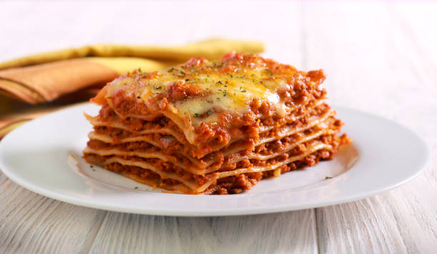

Lasagna

Description
Lasagna is a classic Italian dish known if its delicious sauce and sheets of pasta
Ingredients
Meat Sauce
- Onion
- Garlic
- Carrot
- Celery
- Beef Mince
- Tomato
- Tomato Paste
- Red Wine
- Seasonings
- Beef stock
- Bay leaves
- Thyme
- Oregano
White Sauce
Assembly
Steps
Meat Sauce
- In a pot over medium heat cook Garlic, Onion, Celery, and Carrot for ten minutes
- Add beef mince, break up as it cooks
- Once browned, add remaining Meat Sauce ingredients.
- Once bubbling gently, put the lid on and cook for 2 hours. Stir occassionally
- Remove lid and simmer for 30 minutes
Cheese Sauce
- Warm up milk
- Melt butter in large saucepan over medium-low heat. Add flour and mix constantly for 1 minute
- Pour 1 cup of milk, mix in with flour. Once lump free add remaining milk and wisk
- Turn heat up to medium-high. Stir occasisionally, more frequently as sauce thickens, 5-8 minutes
- Remove from heat, add remaining cheese sauce ingredients
Assemble
- Preheat oven to 180C/350F
- Using a large baking dish, add some meat sauce to the bottom then cover with lasagna sheets.
- Add just enough meat sauce ot cover these sheets, add 1 cup of cheese sauce.
- Top with lasagna sheets, repeat this process 2 more times.
- Top with last layer of lasagna sheets, pour over remaining cheese sauce.
- Sprinkle with cheese of choice, bake for 30 minutes until golden.
- Stand for 5 to 10, then Enjoy!
Home